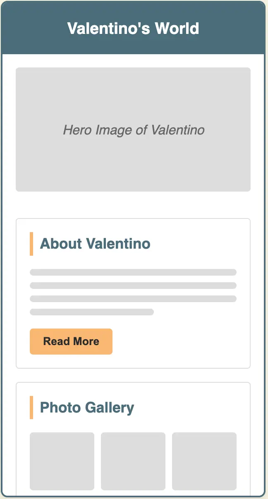
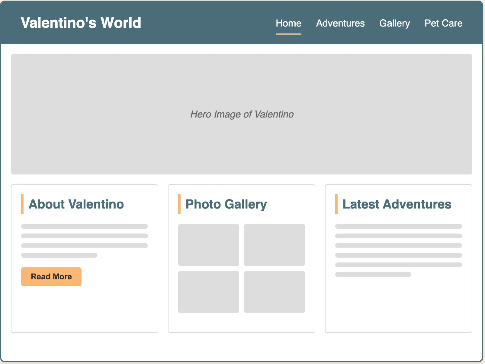

Site Name
"Valentino's World" has been chosen as the site name for this project.
Reason: This name centers around my pet dog Valentino and creates a personal, warm connection for visitors. The name suggests that the site will showcase Valentino's life, adventures, and everything that makes up his "world," making it immediately clear to visitors what the site is about.
Site Purpose
Valentino's World serves as a digital tribute to my 3-year-old mixed Chihuahua, Valentino. The site aims to:
- Share Valentino's life story, personality, and daily activities with fellow dog lovers
- Document our adventures together through blog-style posts
- Showcase Valentino's growth from puppy to adult through a curated photo gallery
- Provide valuable pet care tips based on my experience with Valentino
- Inspire others to consider pet adoption by sharing our positive experience
The website will blend personal storytelling with practical pet care information, creating both an emotional connection and providing value to visitors who are dog owners or animal lovers.
Scenarios
Scenario 1:
"I'm considering adopting a Chihuahua mix. What kind of personality and needs does this breed have?"
Scenario 2:
"I just adopted a puppy and need advice on how to bond with them and provide proper nutrition."
Scenario 3:
"I'm looking for dog-friendly adventure ideas to enjoy with my pet."
Color Schema
Primary Color:
#4A6D7C
Teal Blue - Used for headers, navigation elements, and footer
Secondary Color:
#F9B872
Soft Orange - Used for accent elements, buttons, and highlights
Background Color:
#F8F4E3
Cream - Main background color for content areas
Text Color:
#2B2B2B
Dark Gray - Primary text color for readability
Typography
Heading Font: Montserrat
Used for all headings (h1, h2, h3) to provide a clean, modern look that stands out.
Body Font: Open Sans
Used for body text, paragraphs, and general content for optimal readability across devices.
Accent Font: Caveat
Used sparingly for quotes, photo captions, and special featured text to add a personal, handwritten feel.
Wireframes
The wireframes below illustrate the layout and structure of Valentino's World website across different device sizes. Click on each wireframe to view the interactive version.
Mobile View
Mobile Layout Features:
- Hamburger menu navigation
- Vertically stacked content sections
- Prominent hero image
- Streamlined content for small screens
Desktop View
Desktop Layout Features:
- Horizontal navigation bar
- Three-column content layout
- Expanded image gallery
- More detailed content presentation